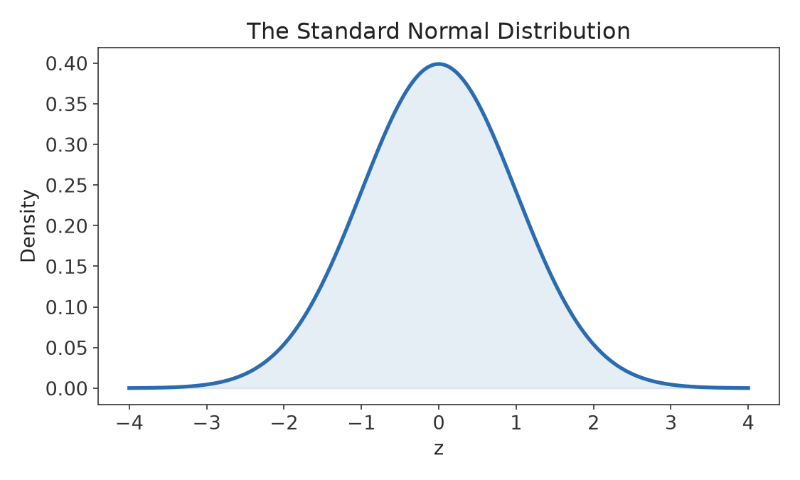
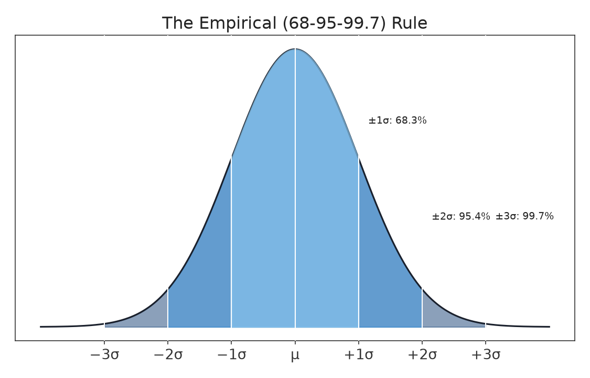
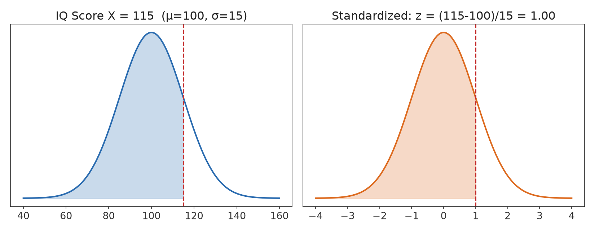

Part I · Descriptive Statistics & Exploratory Data Analysis · Chapter 6
The Normal Distribution and Standard Scores
Many measured quantities in nature and human affairs — heights, standardized test scores, measurement errors, blood pressure — cluster into a characteristic bell-shaped pattern: most values near the center, with progressively fewer values as you move away in either direction, symmetrically. This chapter introduces the mathematical model for that pattern, the normal distribution, and the standardized (z-score) scale that lets us compare values from different normal distributions on common ground. This chapter closes Part I and sets up the probability language of Part II.
6.1 The Normal Curve
Definition
The normal distribution is a continuous, symmetric, bell-shaped distribution fully described by two parameters: its mean μ (which sets the center) and its standard deviation σ (which sets the spread). We write X ~ N(μ, σ) to mean "X follows a normal distribution with mean μ and standard deviation σ."

Figure 6.1 — The standard normal distribution, N(0, 1): mean 0, standard deviation 1. Every normal distribution has this same fundamental bell shape, differing only in where it is centered and how spread out it is.
The normal curve has several important properties: it is symmetric about μ; the mean, median, and mode all coincide at the center; the curve is bell-shaped, highest at μ and decreasing smoothly toward zero in both directions without ever quite reaching it; and the total area under the curve equals 1, since it represents 100% of the distribution's probability (this connection to probability is developed formally in Chapter 11). Changing μ shifts the curve left or right without changing its shape; changing σ stretches or compresses it — a larger σ produces a shorter, wider curve, and a smaller σ produces a taller, narrower one.
6.2 The Empirical Rule
For any normal distribution, the proportion of data falling within a given number of standard deviations of the mean follows a fixed, famous pattern known as the 68-95-99.7 rule, or the empirical rule:

Figure 6.2 — The empirical rule: approximately 68.3% of values fall within ±1σ of the mean, 95.4% within ±2σ, and 99.7% within ±3σ.
Example 6.1
Adult male heights in a population are approximately normal with μ = 70 inches and σ = 3 inches. By the empirical rule:
About 68% of men are between 67 and 73 inches (70 ± 3).
About 95% of men are between 64 and 76 inches (70 ± 6).
About 99.7% of men are between 61 and 79 inches (70 ± 9).
A man who is 80 inches tall is more than 3 standard deviations above the mean — genuinely rare, consistent with less than 0.3% of the population lying outside ±3σ combined (above and below).
6.3 Standardization: The z-score
Definition
The z-score (or standardized score) of an observation x tells you how many standard deviations x lies above or below the mean:
z = (x − μ) / σ
A positive z-score means the observation is above the mean; a negative z-score means it is below the mean; z = 0 means the observation equals the mean exactly. Standardizing converts any normal distribution, regardless of its original mean and standard deviation, into the standard normal distribution, N(0, 1) — the same curve shown in Figure 6.1.

Figure 6.3 — Standardizing an IQ score of 115 from N(100, 15) into a z-score of 1.00 on the standard normal N(0,1). The shaded area — and therefore the probability — is identical in both panels; only the labeling of the x-axis has changed.
Example 6.2 — Comparing Across Different Scales
A student scores 1300 on the SAT (μ = 1050, σ = 200) and 30 on the ACT (μ = 21, σ = 5). Which score is more impressive, relative to other test-takers?
Even though 1300 and 30 are not directly comparable numbers, their z-scores are on the same standardized scale: the ACT score of 30 is 1.80 standard deviations above its mean, notably more impressive than the SAT score, which is only 1.25 standard deviations above its mean.
6.4 Finding Proportions and Values with the Standard Normal Table
Because every normal distribution can be standardized to N(0,1), a single table (or software function) of standard normal probabilities can answer questions about any normal distribution. A standard normal table reports the area under the curve to the left of a given z (that is, the proportion of the distribution below that z-score).
Example 6.3
Using Example 6.1's height distribution, N(70, 3), what proportion of men are shorter than 65 inches?
z = (65 − 70) / 3 = −1.67
Looking up z = −1.67 in a standard normal table gives an area to the left of approximately 0.0475. So about 4.75% of men are shorter than 65 inches.
The same process runs in reverse: given a target proportion, a standard normal table (or its inverse function) returns the corresponding z-score, which can then be converted back to the original scale using x = μ + zσ.
Example 6.4 — Working Backward
A university wants to identify the cutoff SAT score, N(1050, 200), for the top 10% of test-takers. The z-score corresponding to the 90th percentile is approximately z = 1.28 (from a standard normal table).
A score of approximately 1306 or higher places a student in the top 10% of test-takers, under this normal model.
6.5 Assessing Normality
The empirical rule and z-score calculations above are only valid if the underlying data is actually (approximately) normally distributed. Before applying them, it is good practice to check a histogram for a roughly symmetric, bell-shaped pattern (Chapter 5), and to be alert for skew, multiple modes, or heavy outliers, any of which signal that a normal model is a poor fit. More formal tools for assessing normality (such as a normal probability plot) are typically covered in a second course; for now, a careful look at the histogram is sufficient.
Common Pitfall
Not all bell-shaped data is normal, and not all real-world data is bell-shaped at all. Income, reaction times, and population sizes are commonly right-skewed, not normal, and applying the empirical rule to such data will give badly wrong answers. Always check the shape before assuming normality.
6.6 Why the Normal Distribution Matters So Much
Beyond describing many naturally occurring variables directly, the normal distribution plays an even larger role for a surprising reason developed fully in Chapter 12: the Central Limit Theorem shows that the distribution of a sample mean, computed from many samples, tends toward a normal shape as sample size grows — regardless of the shape of the original population. This is why the normal distribution, and the z-score machinery built in this chapter, underlies the vast majority of confidence intervals and hypothesis tests introduced starting in Chapter 14.
Chapter 6 Summary
The normal distribution N(μ, σ) is a symmetric, bell-shaped continuous distribution fully determined by its mean and standard deviation.
The empirical rule states that about 68%, 95%, and 99.7% of a normal distribution's values fall within 1, 2, and 3 standard deviations of the mean, respectively.
The z-score, z = (x−μ)/σ, standardizes any normal observation onto the common N(0,1) scale, enabling comparison across different distributions.
A standard normal table converts between z-scores and proportions (areas under the curve) in both directions.
The normal model should only be applied after checking that the data is reasonably symmetric and bell-shaped.
Exercises
A distribution of standardized test scores is N(500, 100). Find the z-score for a score of 650, and for a score of 380.
Using the empirical rule and the distribution in Exercise 1, what range of scores contains approximately 95% of test-takers?
Adult female heights are approximately N(64, 2.5) inches. What proportion of women are taller than 68 inches? (z for 68 is (68−64)/2.5 = 1.60; the area to the left of z = 1.60 in a standard normal table is approximately 0.9452.)
Two employees are evaluated on different performance scales. Employee A scores 82 on a scale with μ=75, σ=10. Employee B scores 8.8 on a scale with μ=8.0, σ=0.5. Using z-scores, determine which employee performed better relative to their peers.
Explain why it would be inappropriate to apply the empirical rule directly to a data set of individual household incomes in a country.
Selected Solutions
Exercise 1
z for 650: (650−500)/100 = 1.50. z for 380: (380−500)/100 = −1.20.
Exercise 2
95% falls within μ ± 2σ = 500 ± 200, i.e., approximately 300 to 700.
Exercise 3
Area to the left of z=1.60 is about 0.9452, so the area to the right (taller than 68 inches) is 1 − 0.9452 = 0.0548, or about 5.5% of women.
Exercise 4
zA = (82−75)/10 = 0.70. zB = (8.8−8.0)/0.5 = 1.60. Employee B's z-score is higher, meaning Employee B performed better relative to their own peer group, even though 8.8 is a much smaller raw number than 82.